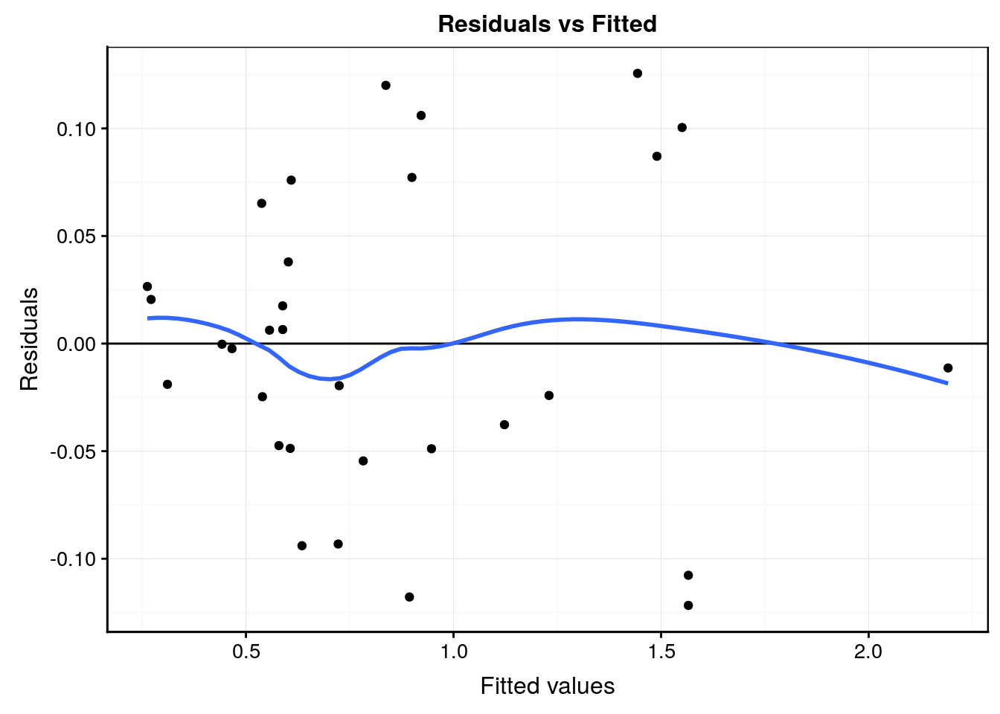
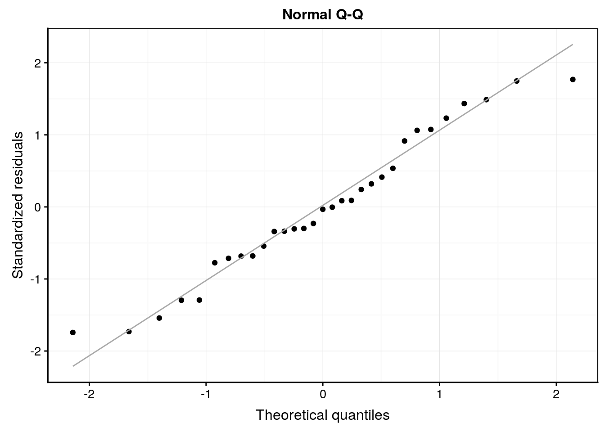
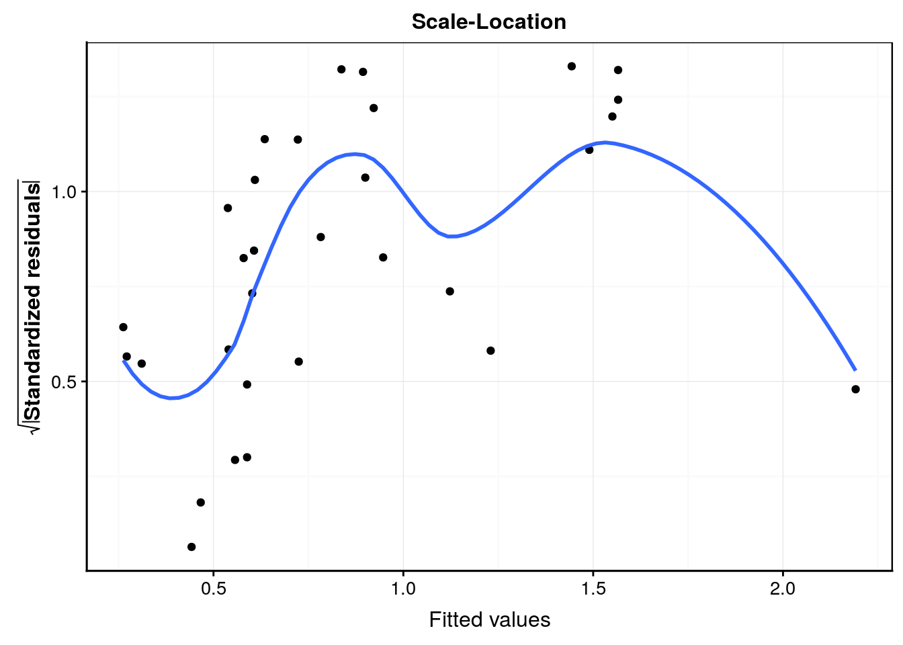
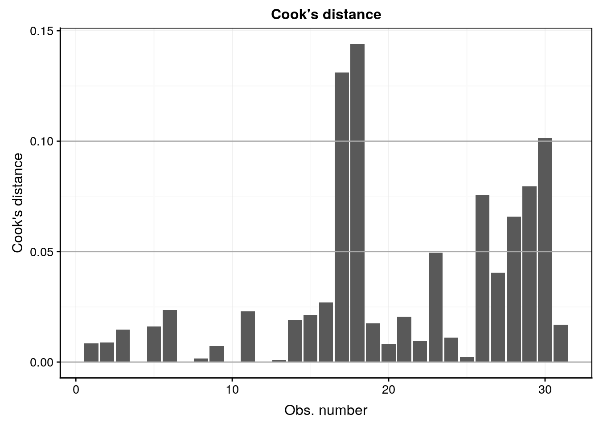

2.4 RMSE & critère d’Akaike
Le R2 (ajusté) n’est pas la seule mesure d’ajustement d’un modèle. Il existe d’autres indicateurs. Par exemple, l’erreur quadratique moyenne, (root mean square error, ou RMSE en anglais) est la racine carrée de la moyenne des résidus au carré. Elle représente en quelque sorte la distance “typique” des résidus. Comme cette distance est exprimée dans les mêmes unités que l’axe y, cette mesure est particulièrement parlante. Nous pouvons l’obtenir par exemple comme ceci :
modelr::rmse(lm., trees)# [1] 0.1166409Cela signifie que l’on peut s’attendre à ce que, en moyenne, les valeurs prédites de volume de bois s’écartent (dans un sens ou dans l’autre) de 0,117 m3 de la valeur effectivement observée. Evidemment, plus un modèle est bon, plus le RMSE est faible, contrairement au R2 qui lui doit être élevé.
Si le R2 comme le RMSE sont utiles pour quantifier la qualité d’ajustement d’une régression, ces mesures sont peu adaptées pour la comparaison de modèles entre eux. En effet, nous avons vu que plus le modèle est complexe, mieux il s’ajuste dans les données. Le R2 ajusté tente de remédier partiellement à ce problème, mais cette métrique reste peu fiable pour comparer des modèles très différents. Le critère d’Akaike, du nom du statisticien japonais qui l’a conçu, est une métrique plus adaptée à de telles comparaisons. Elle se base au départ sur encore une autre mesure de la qualité d’ajustement d’un modèle : la log-vraisemblance. Les explications relatives à cette mesure sont obligatoirement complexes d’un point de vue mathématique et nous vous proposons ici d’en retenir la définition sur un plan purement conceptuel. Un estimateur de maximum de vraisemblance est une mesure qui permet d’inférer le meilleur ajustement possible d’une loi de probabilité par rapport à des données. Dans le cas de la régression par les moindres carrés, la distribution de probabilité à ajuster est celle des résidus (pour rappel, il s’agit d’une distribution Normale de moyenne nulle et d’écart type constant \(\sigma\)). La log-vraisemblance, pour des raisons purement techniques est souvent préféré au maximum de vraissemblance. Il s’agit simplement du logarithme de sa valeur.
Donc, plus la log-vraisemblance est grande, mieux les données sont compatibles avec le modèle probabiliste considéré. Pour un même jeu de données, ces valeurs sont comparables entre elles… même pour des modèles très différents. Mais cela ne règle pas la question de la complexité du modèle. C’est ici qu’Akaike entre en piste. Il propose le critère suivant :
\[ \textrm{AIC} = -2 . \textrm{log-vraisemblance} + 2 . \textrm{nbrpar} \]
- où nbrpar est le nombre de paramètres à estimer dans le modèle. Donc ici, nous prenons comme point de départ moins deux fois la log-vraisemblance, une valeur a priori à minimiser, mais nous lui ajoutons le second terme de pénalisation en fonction de la complexité du modèle valant 2 fois le nombre de paramètres du modèle. Notons d’ailleurs que le terme multiplicateur 2 ici est modifiable. Si nous voulons un modèle le moins complexe possible, nous pourrions très bien multiplier par 3 ou 4 pour pénaliser encore plus. Et si nous voulons être moins restrictifs, nous pouvons aussi diminuer ce facteur multiplicatif. Dans la pratique, le facteur 2 est quand même très majoritairement adapté par les praticiens, mais la possibilité de changer l’impact de complexité du modèle est inclue dans le calcul de facto.
Dès lors que ce critère peut être calculé (et R le fait pour pratiquement tous les modèles qu’il propose), une comparaison est possible avec pour objectif de sélectionner le, ou un des modèles qui a l’AIC la plus faible. N’oubliez toutefois pas de comparer visuellement les différents modèles ajustés et d’interpréter les graphiques d’analyse des résidus respectifs en plus des valeurs d’AIC. C’est l’ensemble de ces outils qui vous orientent vers le meilleur modèle, pas l’AIC seul !
Calculons maintenant les critères d’Akaike pour nos 6 modèles lm. à lm5…
AIC(lm.) # Linéaire diamètre# [1] -39.24246AIC(lm2) # Multiple diamètre et hauteur# [1] -43.82811AIC(lm3) # Polynomial diamètre# [1] -53.50964AIC(lm4) # Diamètre^2# [1] -50.15027AIC(lm5) # Multiple et polynomial# [1] -67.4391D’après ce critère, le modèle linéaire est le moins bon, et le dernier modèle le plus complexe serait le meilleur. Notez toutefois que la différence est relativement minime (en regard du gain total) entre le modèle polynomial complet lm3 et la version simplifié au seul terme diamètre2 en lm4, ce qui permet de penser que cette simplification est justifiée.
Dans l’hypothèse où nous déciderions de conserver le modèle lm5, en voici l’analyse des résidus qui est bonne dans l’ensemble :
#plot(lm5, which = 1)
lm5 %>.%
chart(broom::augment(.), .resid ~ .fitted) +
geom_point() +
geom_hline(yintercept = 0) +
geom_smooth(se = FALSE, method = "loess", formula = y ~ x) +
labs(x = "Fitted values", y = "Residuals") +
ggtitle("Residuals vs Fitted") 
#plot(lm5, which = 2)
lm5 %>.%
chart(broom::augment(.), aes(sample = .std.resid)) +
geom_qq() +
geom_qq_line(colour = "darkgray") +
labs(x = "Theoretical quantiles", y = "Standardized residuals") +
ggtitle("Normal Q-Q") 
#plot(lm5, which = 3)
lm5 %>.%
chart(broom::augment(.), sqrt(abs(.std.resid)) ~ .fitted) +
geom_point() +
geom_smooth(se = FALSE, method = "loess", formula = y ~ x) +
labs(x = "Fitted values",
y = expression(bold(sqrt(abs("Standardized residuals"))))) +
ggtitle("Scale-Location") 
#plot(lm5, which = 4)
lm5 %>.%
chart(broom::augment(.), .cooksd ~ seq_along(.cooksd)) +
geom_bar(stat = "identity") +
geom_hline(yintercept = seq(0, 0.1, by = 0.05), colour = "darkgray") +
labs(x = "Obs. number", y = "Cook's distance") +
ggtitle("Cook's distance") 
Naturellement, même si c’est le cas ici, ce n’est pas toujours le modèle le plus complexe qui “gagne” toujours. Même ici, nous pourrions nous demander si le modèle polynomial utilisant uniquement le diamètre ne serait pas plus intéressant en pratique car son ajustement est tout de même relativement bon (même si son critère d’Akaike est nettement moins en sa faveur), mais d’un point de vue pratique, il nous dispense de devoir mesurer la hauteur des arbres pour prédire le volume de bois. Ce n’est peut-être pas négligeable comme gain, pour une erreur de prédiction légèrement supérieure si on compare les valeurs de RMSE.
modelr::rmse(lm5, trees) # Multiple et polynomial# [1] 0.06939391modelr::rmse(lm3, trees) # Polynomial diamètre# [1] 0.08972287L’erreur moyenne d’estimation du volume de bois passe de 0,07 m3 pour le modèle le plus complexe lm5 utilisant à la fois le diamètre et la hauteur à 0,09 m3. C’est à l’exploitant qu’il appartient de déterminer si le gain de précision vaut la peine de devoir effectuer deux mesures au lieu d’une seule. Mais au moins, nous sommes capables, en qualité de scientifiques des données, de lui proposer les alternatives possible et d’en quantifier les effets respectifs.

A vous de jouer !
Après cette longue lecture avec énormément de nouvelles matières, nous vous proposons les exercices suivants :
- Répondez aux questions d’un learnr afin de vérifier vos acquis.
Démarrez la SciViews Box et RStudio. Dans la fenêtre Console de RStudio, entrez l’instruction suivante suivie de la touche Entrée pour ouvrir le tutoriel concernant les bases de R :
BioDataScience2::run("02b_reg_poly")ESC pour reprendre la main dans R à la fin d’un tutoriel dans la console R.
- Réalisez un carnet de laboratoire sur la biométrie des oursins avec l’assignation ci-dessous.
Vous avez à votre disposition une assignation GitHub Classroom :
Réalisez un rapport scientifique sur la croissance des escargots géants d’Afrique.
Vous avez à votre disposition une assignation GitHub Classroom :